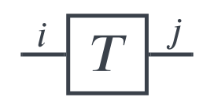
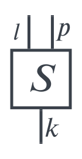
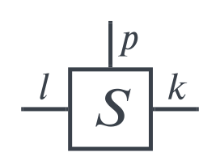
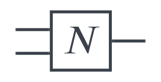
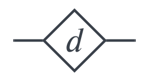
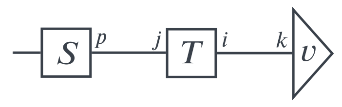
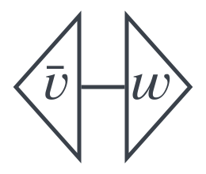
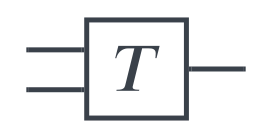
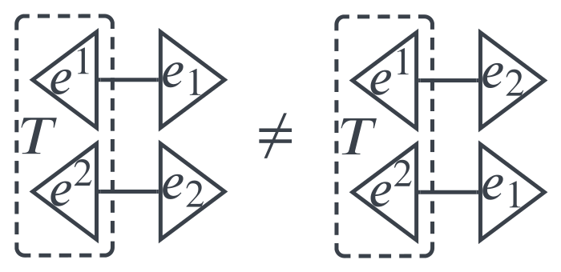

Tensor Networks
Contents
3. Tensor Networks¶
3.1. Tensor Network Diagrams¶
In the previous chapter we have introduced tensors and operations on tensors. Tensor products and contractions offer ways to compose existing tensors to new ones. Consider for example the order-\((2,1)\) tensor
It was composed from an order-\((1,1)\) tensor \(T\) and an order-\((2,1)\) tensor \(S\). Both have been combined by a tensor product (yielding 5 tensor indices) and then zipped by a contraction (yielding 3 remaining tensor indices and the summation index \(j\)).
In literature various opinions (definitions) are circulating on what tensor networks are. Some call already a decomposition of a tensor by means of tensor products and contractions a tensor networks. For example the Matrix Product State, a decomposition of a tensor into a sum of matrix products is often referred as a simplistic instance of a tensor network. Others connect the term tensor network with the graphical language (notation) we will introduce shortly. Indeed, tensor network diagrams join shapes representing tensors with wires. Hence, such diagrams display networks of tensors wired together. Defining the name is not the most important thing, so we will give a shaky definition that follows the notion of decomposition into tensors, but use tensor networks from now on always in conjunction with illustrations exploiting the graphical language.
Definition 3.1 (Tensor Network)
A tensor network is a tensor, composed from other tensors using tensor products and contractions.
Having clarified this, let us straight away jump into the graphical notation for tensor networks. It was introduced by Roger Penrose in [Pen71]. Jacob Biamonte has refined the way certain shapes underpin the structure of tensors [Bia19], we will follow mostly his suggestions.
Remark 3.1 (Tensor Network Diagrams)
Each tensor is represented by a geometric shape. Indices are represented by legs connected to the shape. We will distinguish covariant and contravariant indices by consideration of the leg direction. Covariant legs point to the left or up, contravariant legs point to the right or down. The tensor
can be drawn with left-right orientation as follows.
{kind=link}
Orienting the legs up-down and describe tensor
as seen here.
{kind=link}
Also having mixed orientations is possible.
{kind=link}
The tensor product is displayed by drawing the factor tensor next to each other. We draw
as follows.

The contraction of two indices will be represented by connecting the respective legs. We will call this a wire. The tensor of equation (3.1) is obtained by
and can be displayed as shown in this picture.

The naming of indices is an implementation detail that might be omitted by not labeling certain (or all) legs. In general objects might not be named if not in focus. Furthermore we will be free to use symbols, containers, etc. if it supports understanding.

So far the general alphabet of graphical tensor language is already defined. We will now go over some specific words.
Remark 3.2 (Vectors)
Vectors are represented by triangular shapes, e.g.

We will apply this shape also to elements from tensor product spaces that have only covariant indices, e.g.
{kind=link}
Remark 3.3 (Dual Vectors)
Contrarily, the shape is flipped when standing for an element of a dual space or tensor product of dual spaces, e.g.
{kind=link}
Remark 3.4 (General Tensors)
All tensors combining vector parts and dual parts will usually be displayed as a square - with exception of specific tensors that shall be visually distinguishable. We have already seen examples in Remark 3.1, let us display tensor
from (3.1) again.
{kind=link}
A first species that will own a separate shape to reveal its specifics are tensors with diagonal coefficients matrix, e.g.
These diagonal tensors are, so to speak, a hybrid of a vector and a tensor having a covariant as well as a contravariant index. This is reflected by combining the shapes of a vector and a dual vector into a diamond shape.
{kind=link}
Now we are ready to combine tensors by connecting legs (indices) with wires (contractions). A fundamental ingredient of Linear Algebra are linear maps. In the previous chapter we have seen, how they can be formulated in terms of tensors. We will translate the formulas obtained there into the graphical tensor language. The outcome will match our intuition.
Remark 3.5 (Linear Maps)
We recall, that we can write the application of a linear map \(T\) to a vector \(v\) as the tensor product of both regarded as tensors:
Hence, this can be drawn as follows.

Similarly, we can visualize the application of a dual map
as:

Actually, the same tensor can be interpreted in both ways. If we connect the covariant index with a vector, then it is acting as linear map. The remaining open index of the construct is a contravariant index, symbolizing the image vector. If we connect the contravariant index of the tensor with a dual vector, then we have visualized the application of a dual linear map. The resulting image possesses a covariant index, thus being the dual image vector.
Chaining linear maps is straight forward as well. This is achieved by contracting the tensor product of the tensors representing the maps.
Hence, the picture shows what intution expects, the two tensors symbolizing the maps have to be wired together.
{kind=link}
Hence, the picture shows what intution expects, the two tensors symbolizing the maps have to be wired together.
A bilinear map
extends this picture simply by adding and contracting the second argument to the map tensor.

Multilinear maps would extend this picture even further by adding as many argument vectors as needed.
In case that the map tensor can be decomposed into a tensor product, enabling equation
the decomposition is shown as two maps next to each other. Note, that this complies with the figure of a tensor product - both tensors will be drawn independently without any interaction (as long as no contraction is involved).

Remark 3.6 (Scalars, Complete Contraction)
So far we have not considered the possibility of a scalar (element of the underlying field). Since a scalar value can be treated as tensor without indices, it is exactly drawn like this, as shape without legs.
{kind=link}
Having used a circle is arbitrary - actually it does not matter, because we will very rarely draw isoloated scalar tensors. More common is the case, that a complex tensor network is fully contracted to a scalar. We give a few examples (with limited complexity though) here. Referring to Example 2.3, the trace of a matrix can be expressed as fully contracted tensor:

Using the way of visualizing composed linear maps, the trace of a matrix product (composed linear maps) would be:

Another operation from Linear Algebra that results in a scalar value is the inner product. We consider the case of the inner product space being \(\C^n\) equipped with the standard basis (which is orthonormal) \(\{e_1,\ldots,e_n\}\). We can calculate the inner product of \(v=\sum\limits_{i=1}^nv^ie_i\) and \(w=\sum\limits_{j=1}^nw^je_j\) by their coefficients:
On the other hand, let \(\bar{v}=\sum\limits_{i=1}^n\bar{v}_ie^i\) be a dual vector, that has the conjugate complex coefficients of \(v\) (i.e. \(\bar{v}^i=\bar{v}_i\)) in the dual standard basis. We calculate
Thus, the inner product of \(v\) and \(w\) can be expressed with a tensor product using \(\bar{v}\) instead of \(v\). The tensor network diagram can be drawn accordingly.
{kind=link}
With this we have introduced the basic building blocks of tensor network diagrams. As we see, they provide a bird’s eye perspective on tensor networks. Certain implementation details are abstracted away from the viewer, such as index labels or index order. For example, the tensor behind
{kind=link}
could be
or with other index names
or changing the index order
or an object in another space
However, we want to emphasize that certain properties are strict and do not allow for ambiguity. The following tensor network diagrams refer to different object because the amounts of covariant and contravariant (the tensor’s order) do matter.

But we need to be careful, indices might not be interchangeable when tensor’s internal mode of operation is known and not symmetric. Consider e.g. \(T=e^1\otimes e^2\in\R^2\otimes\R^2\) with \(\{e^1,e^2\}\) being dual standard basis. Then the diagrams
{kind=link}
are not equal, the left one contracts to value \(1\), the right one contracts to value \(0\).
3.2. Wiring¶
The graphical representation of a tensor network can be considered as a graph, consisting of nodes and wires, with potentially open wires coming out of a tensor but not leading to another tensor. After having described different kinds of nodes, we will deal with the wires in this section.
First, we recall the definition of the Kronecker delta, Definition 2.5. Now, we will consider the Kronecker delta as tensor by using for example \(\delta_i^j\) as coefficients. This results in tensor
that can be drawn as:
{kind=link}
Fig. 3.1 Kronecker delta¶
Usually the Kronecker delta will be used in situations when both indices share the same dimension. This is the reason, that both summation indices of equation (3.2) have the same limits.
Now, assume we have other tensors connected to the Kronecker delta, for example:
{kind=link}
Fig. 3.2 Connected Kronecker delta¶
The Kronecker delta will only keep coefficients with \(i=j\) alive. This means, that the two contractions along \(i\) and \(j\) will be resolved into one contraction along a unified index:
This equation can also be expressed within the diagramatic language:
{kind=link}
Fig. 3.3 Resolution of Kronecker delta¶
In consequence the Kronecker delta is in a sense representing a wire. The directions are defined by the type of Kronecker delta (location of the indices).
Remark 3.7 (Drawing the Kronecker delta)
{kind=link}
{kind=link}
{kind=link}
We have justified Fig. 3.4, but what about Fig. 3.5 and Fig. 3.6? After all we have worked out that contractions always combine a contravariant and a covariant index. So, how can a bended wire represent a contraction? This question is answered by the Kronecker delta interpretation. Consider for example the following situation.
{kind=link}
This looks like a linear map \(T\) applied to a dual vector \(v^*\). With help of \(\sum\limits_{i=1}^n\sum\limits_{j=1}^n\delta^{ij}\,e_i\otimes e_j\) which is standing for the bending to the left, we can describe this tensor network algebraically:
The intermediate Kronecker delta is adapting the index locations. Thus, the diagram Fig. 3.7 is completely justified. It appears as either the index \(i\) of \(T\) was rasied to superscript or as index \(j\) of \(v^\ast\) was lowered to subscript (so that the application of linear map to dual vector can be executed). Accordingly this technique is called raising respectively lowering indices. Raising and lowering indices preserves the coefficients of a tensor, but uses it together with the dual basis (for the modified index).
If we consider vector \(\sum\limits_{k=1}^nv^ke_k\), then lowering the index (of coefficients) would be achieved by following equation:
We see, that we have constructed a dual vector \(v'\) with same coefficients \(v^i\). It would be convenient to write them with a subscript index now. On the other hand, a dual vector is representing a linear functional with its matrix representation being a row vector. Keeping the basis fixed, we identify
The constructed dual vector, having the same coefficients, is represented by
Hence, we could write \(v'=\sum\limits_{i=1}^nv^T_ie^i\). Bending the wire, which implies lowering the index, is transposing the coefficients vector. The same can be done for a dual vector and a linear map (matrix). Using the tensor network diagram notation, the relations can be expressed as follows.
Observation 3.1 (Transposition)
{kind=link}
{kind=link}
{kind=link}
We wanted to be precise in Observation 3.1, but considering Fig. 3.8 and Fig. 3.9, the vectors of coefficients \(v\) and \(v^T\) are the same - apart from orientation. In future diagrams we might be lazy and stick in both cases to \(v\) (if there is no danger of confusion). [Pen71] gives the following identity, called snake or zig-zag equation.
Observation 3.2 (Snake equation)
{kind=link}
Fig. 3.11 Snake equation¶
Proof. We have \(\delta^{ik}\delta_{kj}\neq 0\) if and only if \(i=k=j\). Therefore,
Next we will use the tensor
For \(v=\sum\limits_{p=1}^nv^pe_p\in V\) and \(w=\sum\limits_{q=1}^nw^qe_q\in W\) we define the \(\swap\) operator by
Evaluating the contractions we obtain
Hence the \(\swap\) operator is a linear map (bilinear if we consider \(v\) and \(w\) to be independent variables) with
During chapter Tensors we have stated that the tensor product can be consider as commutative. We will not question this fact, as \(V\otimes W\simeq W\otimes V\) with the natural isomorphism \(v\otimes w\leftrightarrow w\otimes v\). In practical applications, however, the order of factors might be relevant - because it might define which tensors in the diagram are connected. In quantum circuits for example qubits might not be interchangeable. In these cases, the \(\swap\) operator is relevant - if values of two qubits need to be swapped during a quantum computation for instance. In chapter Quantum Computing we will learn how the \(\swap\) operator can implemented on quantum computers. For the moment we leave it with claiming its relevance.
Equations (3.4), (3.5), (3.6) can be depicted as
{kind=link}
Fig. 3.12 \(\swap\) operator in action¶
visualizing the exchanged roles of \(v\) and \(w\). This leads to the following definition.
Definition 3.2 (\(\swap\) operator)
{kind=link}
Observation 3.3 (\(\swap\) twice)
The \(\swap\) operator is self-inverse. Swapping the same vectors twice is nothing different than the identity map.
{kind=link}
Fig. 3.14 \(\swap\) twice¶
3.3. Permutations¶
Before we continue with tensor networks, we will investigate permutations. This will come handy when we introduce the Levi-Civita Symbol.
We start with some history and the 15-puzzle. As a reference confer [Slo09]. Worcester, Massachusetts, January 1880: Dentist Dr. Pevey published following reward offer.
Fig. 3.15 Award¶
A set of false teeth and $100 for the successful competitor, who would be able to solve the 15-puzzle. The puzzle was invented a few years earlier and first sold around Christmas 1879.
Fig. 3.16 Gem Puzzle¶
The instructions have been very simple: “Place the blocks in the box irregularly, then move until in regular order.” Maybe you want to try yourself.
When you hit “scramble”, random moves are executed to create a starting configuration. Obviously this is always solvable, you just would need to reverse the sequence of moves. However, back in 1880 using the wooden box and starting with a random placement of blocks, this turned out to be different. One time people could solve it - and the next time it seemed impossible. Especially the arrangement, with all the numbers already correctly placed but numbers 14 and 15 reversed, conveyed the impression to not be solvable. Still many people claimed it was.

Fig. 3.17 Unsolvable¶
Such an argument led Dr. Pevey to offer a price as he described later.
Dr. Pevey Explains. (Worcester Evening Gazette, January 31, 1880) The reason why I wanted you all to help me work out the puzzle was to convince that girl. You see she said she worked it out; she knew she did, and if I said she did not, I simply doubted her veracity. Now to doubt the word of a young lady is high treason and of course should be punished as such, so I stopped to think how I could convince her (without putting it into words) that she did not do what she said she did. From her looks I made up my mind it was no easy task and would probably require the whole population of Worcester to help me. For she knew she did it! And that you know would ordinarily settle it, but take what it would or cost what it would, she must be convinced, but now that we have all given the matter a weeks careful study, and without a single favorable result. Probably she will no longer contend that she did it. At first some of us, as you know, rather held to it that it could be done, and that perhaps she was right. But now that we are all of one mind, that it can not be done, and that we were mistaken, we will laugh over our week’s fun and proceed to business again. Respectfully, Chas. K. Pevey Pevey’s Dental Rooms, cor. Main and Pleasant Streets, Worcester, Mass.
But is it really bulletproof evidence that a crowd didn’t come up with a solution? Of course not, otherwise inventions not made yet would never be made. Let’s develop a logical argument that demystifies the riddle.
We claim that there are two kinds of piece configurations.
Solvable: Those that can be transferred by regular moves into the target configuration. That is numbers being in order \(1,2,\ldots,15\) (row by row from left to right) with the empty square located after number \(15\) (in lower right corner).
Unsolvable: Those that can not be transferred by regular moves into the target configuration.
In particular, the configuration derived from target configuration by swapping \(14\) and \(15\) is unsolvable. To classify piece configurations we’ll construct an invariant that doesn’t change under moving. This will be done with the help of permutations and inversions.
Definition 3.3 (Permutation)
An \(\pmb{n}\)-permutation \(\pi\) is a bijection \(\pi:\{1,\ldots,n\}\rightarrow\{1,\ldots,n\}\). If the specific \(n\) is unimportant or implicitely given, we might use the term permutation.
An inversion of a permutation \(\pi\) is a pair \((i,j)\) with \(i<j\) and \(\pi(i)>\pi(j)\).
The inversion set ist the set of all inversions.
The inversion number \(\inv(\pi)\) is given by the cardinality of the inversion set
To every piece configuration a permutation of pieces can be assigned. We form a sequence of pieces by reading the first row from left to right, then the second row from left to right and so on (the empty square is to be ignored). The resulting sequence is considered to be \(\pi(1),\pi(2),\ldots,\pi(15)\).
For example, to the target configuration the identity map \(\id:\id(k)=k,\,\forall k\) is assigned, \(\inv(\id)=0\). To the configuration with \(14\) and \(15\) being swapped, the permutation
is assigned, \(\inv(\tau)=1\).
Observation 3.4 (Invariant)
For a given piece configuration let \(\pi\) denote the assigned permutation and let \(r:1\le r\le 4\) denote the row number of the empty square. Then
is invariant under any legal move.
Proof. First of all, sliding a piece in the same row changes neither the number of inversions nor the row number of the empty square. Therefore let’s consider moving a piece down (moving up is following the same argument).
What happens to the assigned permutation? Consider the sequence of pieces we used during construction. The moving piece is shifted three positions towards the end of sequence. Hence, exactly three swaps of piece pairs occur. Each swap will impose a change of inversion status of the affected pair. Either the pair will be turned from being in order into an inversion or vice versa. Since there are three swaps, the inversion number will change parity.
On the other hand the empty square moves up, causing the row number to change parity as well. Therefore the parity of \(\inv(\pi)+r\) doesn’t change.
The rest is simple. To be solvable a piece configuration needs to have same parity of \(\inv(\pi)+r\) as the target configuration, that is even. Swapping \(14\) and \(15\) yields odd \(\inv(\tau)+r\). Therefore no sequence of legal moves exists to transfer this configuration into the target configuration.
Let’s continue with another quadratic playing field, this time a matrix \(A\in\C^{n\times n}\). This time the classes are:
Solvable: \(A\) is invertible, i.e. there is a matrix \(A^{-1}\in\C^{n\times n}\) with \(AA^{-1}=A^{-1}A=I\).
Unsolvable: Aforementioned matrix \(A^{-1}\) is not existing.
Again we will distinguish both classes be constructing an appropriate invariant.
Definition 3.4 (Parity of permutation)
The parity \(\sgn(\pi)\) of a permutation \(\pi\) is defined by
Observation 3.5 (Parity swap)
If we swap two values of a permutation, then the parity changes. That is, if \(\pi\) and \(\pi'\) are \(n\)-permutations with
for some \(i\) and \(j\), then
Definition 3.5 (Determinant)
We denote the set of all \(n\)-permutations by \(S_n\). We define the determinant of a matrix \(A=\lbrack a_{ij}\rbrack_{i=1,j=1}^{n,\;\;\;n}\in\C^{n\times n}\) by
This formula will become much clearer, when writing out for small or sparse matrices.
Example 3.1 (Determinant of \(1\times 1\)-matrix)
Let \(A=[a]\). The only permutation of one element is \(\id\) with \(\sgn(\id)=1\). We get
Example 3.2 (Determinant of \(2\times 2\)-matrix)
Let \(A=\begin{bmatrix} a & b \\ c & d \end{bmatrix}\). We have two permutations, \(\id\) and \(\pi:\pi(1)=2,\pi(2)=1\) with \(\sgn(\pi)=-1\). We get
Example 3.3 (Determinant of \(3\times 3\)-matrix)
Let \(A=\begin{bmatrix} a_{11} & a_{12} & a_{13} \\ a_{21} & a_{22} & a_{23} \\ a_{31} & a_{32} & a_{33} \end{bmatrix}\). We get
Example 3.4 (Determinant of diagonal matrix)
Let \(A=\diag(a_1,\ldots,a_n)\). All permutations but \(\id\) contain a zero-element in the respective product. Hence only one addend remains and we get
Example 3.5 (Determinant of triangular matrix)
The same reasoning as in Example 3.4 can be applied. Again only the main diagonal addend survives and the determinant is given by the product of the main diagonal entries.
It’s time to derive some properties from the definition.
Observation 3.6 (Determinant properties)
We regard matrices \(A=\lbrack a_{ij}\rbrack_{i=1,j=1}^{n,\;\;\;n}\in\C^{n\times n}\) as being composed of its \(n\) columns, so denoted as \(A=[A_1\ldots A_n]\). The column vector \(A_j\) is composed of the entries of the \(j\)-th column \((A_j)_i=a_{ij}\). Thus, the determinant \(\det(A)\) can be considered as function of the \(n\) columns \(\det(A)=f(A_1,\ldots,A_n)\). This function has the following properties:
\(f\) is multilinear, i.e. \(f\) is linear for every column \(A_i\):
\(f\) is alternating, i.e. swapping two columns will change the sign:
Proof. Multilinearity can be shown straight forward from definition of determinant.
For proving the alternating property, we first assume that the two columns \(A_i\) and \(A_j\) are adjacent. Swapping them correlates to replacing in each addend permutation \(\pi\) by
By construction \(\pi'\) has the same inversions as \(\pi\) but the status of \((i,j)\) is flipped. Thus, \(\sgn(\pi')=-\sgn(\pi)\). This implies the assertion for adjacent columns.
If \(A_i\) and \(A_j\) are not adjacent, the swap can be executed by consecutive execution of adjacent swaps. Similar to bubble sort, move \(A_i\) next to \(A_j\). Swap both and move \(A_j\) back to the initial position of \(A_i\). The procedure takes an odd number of swaps (twice the movement plus the swap of \(A_i\) and \(A_j\)). This yields the full assertion.
From this result we can draw two simple yet powerful consequences.
Corollary 3.1 (Identical columns)
If two columns of \(A\) are the same, then \(\det(A)=0\).
Proof. We use the alternating property and swap the equal columns. This would not change \(A\) but the sign of its determinant. Hence, zero is the only possible value.
Corollary 3.2 (Elementary operations)
If to one column of \(A\) a linear combination of other columns is added, then the determinant doesn’t change.
Proof. We use multilinearity and the previous corollary. Taking apart the linear combination into a sum of determinants leaves only the original determinant. The other addends are zero due to duplication of a column.
Now we are ready to formulate the invariant.
Theorem 3.1 (Invertibility criteria)
A matrix \(A\in\C^{n\times n}\) is invertible if and only if \(\det(A)\neq 0\).
Proof. We use Gaussian elimination to try to obtain the inverse to \(A\). Usually Gaussian elemination is executed row-wise, but due to the fact that \((A^{-1})^\dagger=(A^\dagger)^{-1}\) we can apply it column-wise. The previous corollary ensures, that the elimination steps will not modify the determinant. We will run into either one of the following cases:
\(A\) is invertible. In this case Gaussian elimination will yield a triangular matrix with main diagonal entries being non-zero. Consequently, \(\det(A)\neq 0\).
\(A\) is not invertible. In this case Gaussian elimination will yield a zero-column. Hence, every product of the determinant definition has a zero factor. We obtain \(\det(A)=0\).
This proves the theorem.
3.4. Graphical Reasoning¶
Another helpful tool using the parity of permutations is the \(\varepsilon\)-tensor.
Definition 3.6 (\(\varepsilon\)-tensor)
For indices \(i_1,\ldots,i_r\) we define the Levi-Civita symbol as
The \(\bold{\varepsilon}\)-tensor is a tensor based on the Levi-Civita symbol.
We have defined the \(\varepsilon\)-tensor using contravariant indices (superscript at coefficients), but similar to the Kronecker symbol we will be using the \(\varepsilon\)-tensor with all kinds of index combinations. For example,
is also an \(\varepsilon\)-tensor making use of the Levi-Civita symbol with subscript indices. The \(\varepsilon\)-tensor will usually used in conjunction with other tensors that define its type. Therefore we will be using a round shape, for instance the tensor of equation (3.8) will look like (using wire bending):
{kind=link}
Fig. 3.18 \(\varepsilon\)-tensor¶
From Observation 3.5 we learn that the \(\varepsilon\)-tensor will change its sign, if the position of two coefficient’s indices is swapped. For example, again using the tensor of (3.8), we have
This can of course also be expressed as diagram:
{kind=link}
Fig. 3.19 Index swap¶
Definition 3.7 (Antisymmetric tensor)
In accordance with antisymmetric matrices, we call a tensor that switches sign under index swap antisymmetric tensor.
Let
be a tensor. We know from Example 3.2 how we can compute the determinant of its coefficients matrix, which we will denote as \(\det(T)\) here.
Now, check this out.
Observation 3.7 (Determinant diagram)
{kind=link}
Proof. We transform the left-hand side into the ride-hand side.
Let \(\psi\in\C^2\otimes\C^2\) be a vector of a tensor product space. \(\psi\) can be entangled or separable. Similar to the determinant being an invariant for invertible matrices, we will now define an invariant for entangled/separable tensors.
Definition 3.8 (Concurrence)
We define the concurrence \(C(\psi)\) of \(\psi\in\C^2\otimes\C^2\) as the absolute value of the following full contracted tensor network (therefore it is a real number).
{kind=link}
Fig. 3.21 Concurrence¶
The concurrence measures, if a tensor is entangled.
Observation 3.8 (Concurrence as invariant)
\(\psi\in\C^2\otimes\C^2\) is entangled if and only if \(C(\psi)\neq 0\).
Proof. We have
{kind=link}
Fig. 3.22 Concurrence equation¶
Final step:
{kind=link}
Fig. 3.23 Local transformation¶